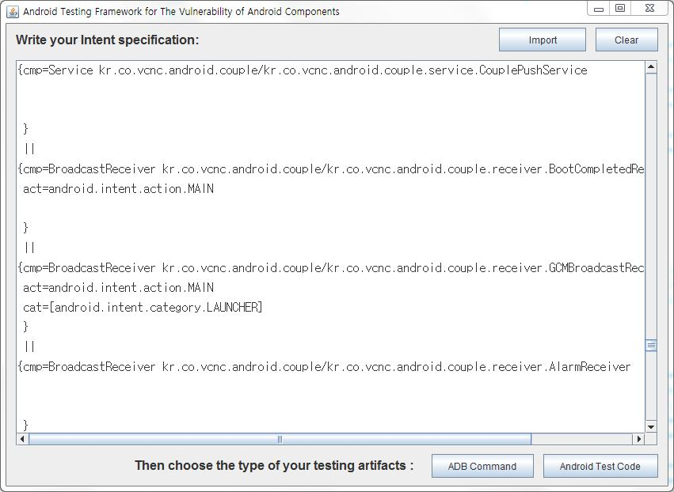
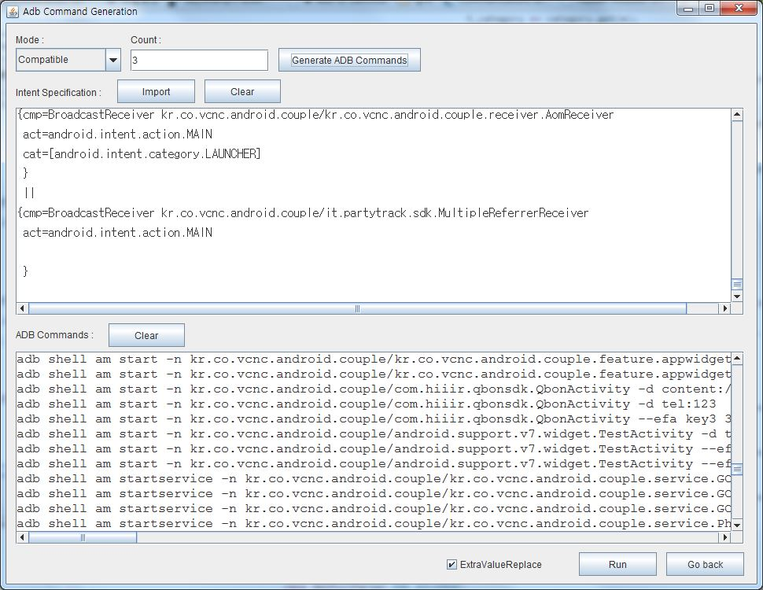
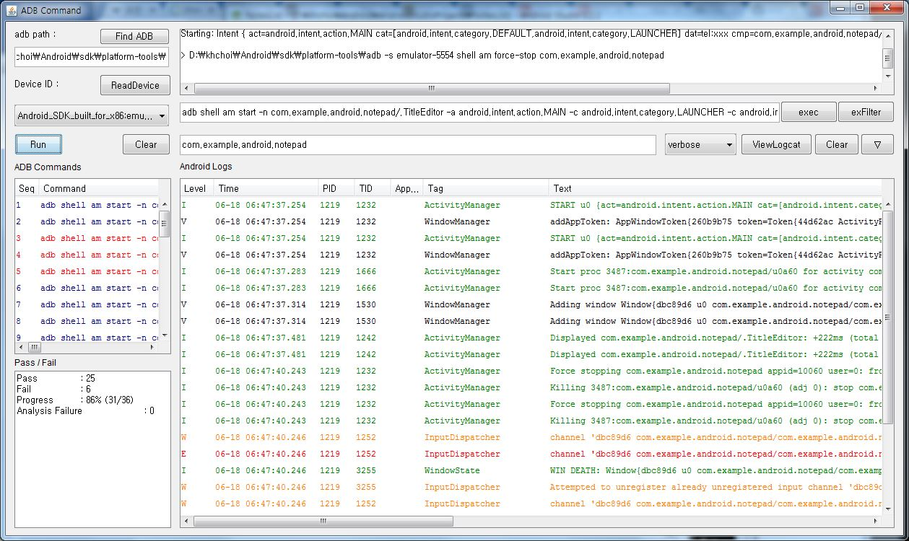
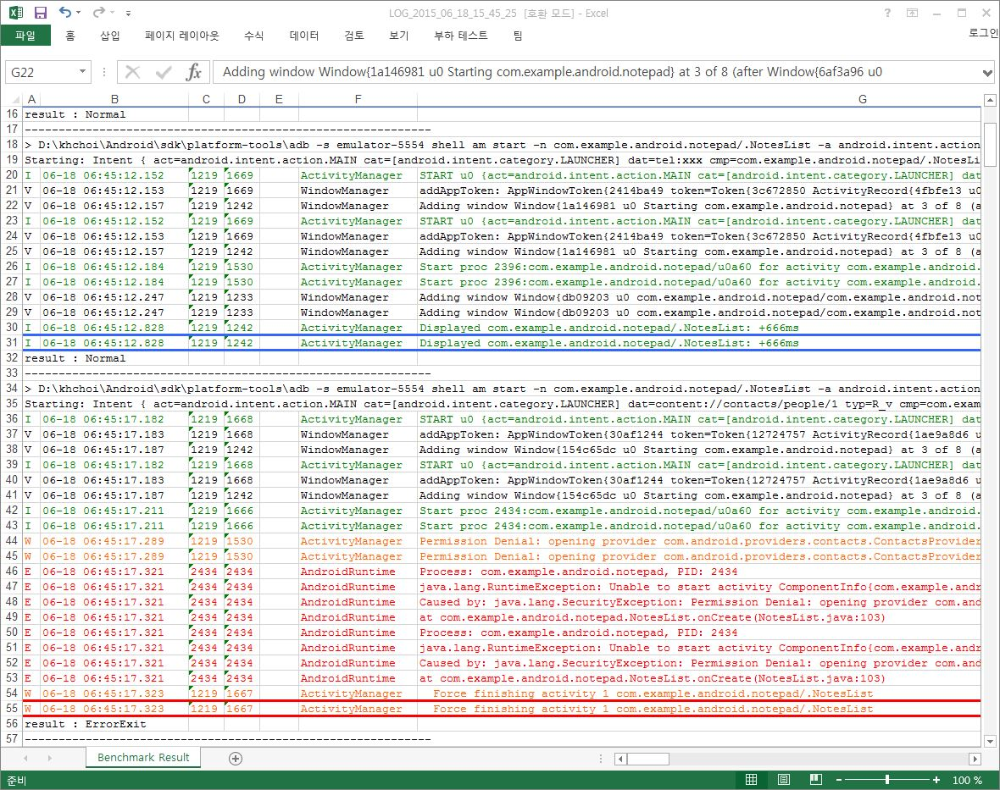
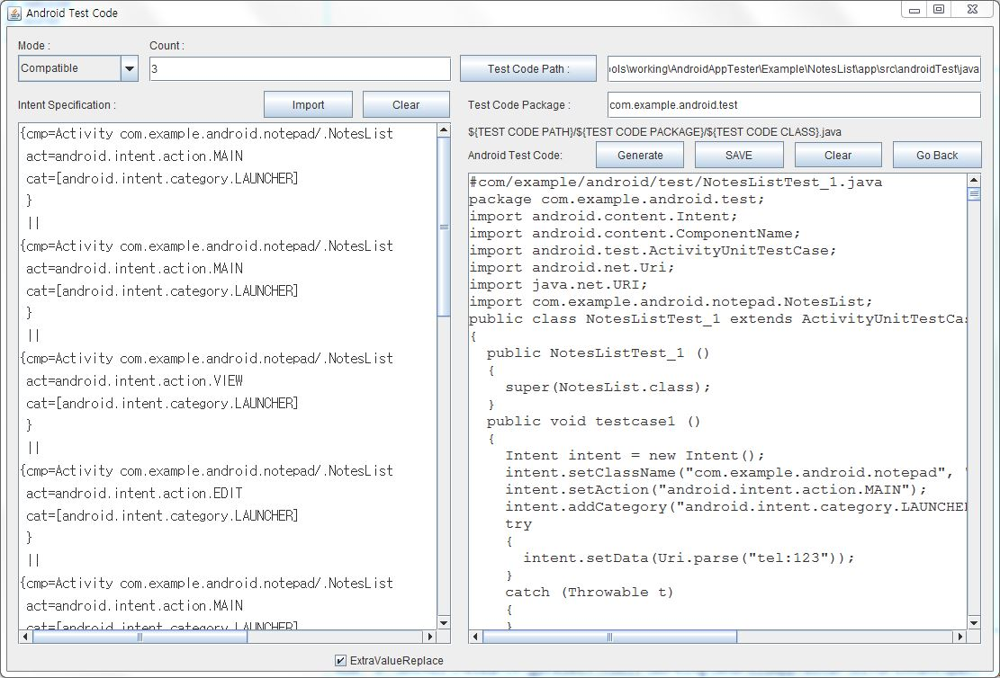
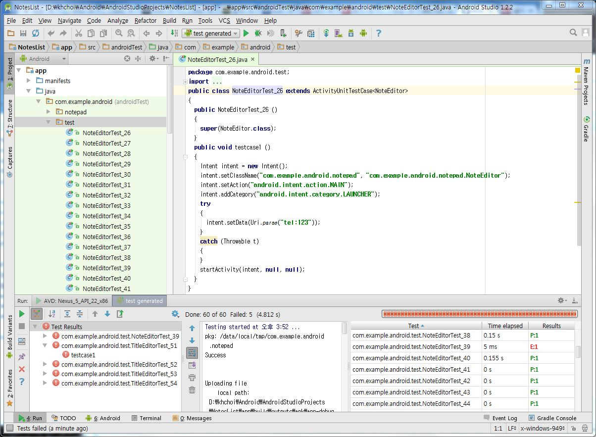

Programmers can write their own an intent specification manually or can import it from APK files or AndroidManifest.xml.
Once an intent specification is written, press either "ADB Command" button or "Android Test Code" button to generate the corresponding testing artifacts.

Given an intent specification for an Android app, our tools generate ADB commands (via intents automatically generated from the specification) for testing the intent vulnerability of the Android app.
Before you press "Generate ADB Command" button, you may choose a mode (Compatible, Shape-compatible, Random) and the number ("Count") of ADB commands for each intent generated from the intent specification.
When something goes wrong, for example by writing a gramatically incorrect intent specification, you may see some error message instead of ADB commands in the bottom part of the screen. (Here is a grammar of the Intent Specification Langauge). Then you try again after clearing the error message by pressing "Clear" button.

Given a set of ADB commands, our tools help to run them on either Android emulator or Android devices.
You are assumed to have installed Android SDK before. Once you install Android Studio, it will include the Android SDK as well as Android Studio IDE. When you need to install Android Studio, visit this Android Studio download site.)
A step-by-step guide
In the left and middle part, you see ADB commands ready to fire in sequence.
First, you need to set the path to the ADB executable by pressing Find ADB button. The ADB executable is available under your Android SDK directory (sdk\platform-tools\adb.exe on Windows). Typically, the Android SDK is located in C:\Users\your-user-name\AppData\Local\Android on Windows.
After you connect an Android device via USB to your PC or you launch an Android emulator, press ReadDevice button to get the device(or emulator) ID.
Once you see a device ID, press ViewLogcat button in the middle right part of the screen to get a bunch of Android logs in the bottom of the screen.
Now press Run button. Then our tools will automatically run each of the listed ADB commands one by one. You can see progress and pass/fail results in the left bottom part of the screen.

Every line of Android logs you see (by pressing "View Logcat" button before you pressing "Run" button) is recorded in Microsfot Excel format for your off-line reviews. This will help you to verify the Pass/Fail results and the reasonsfor the results.

Given an intent specification for an Android app, our tools can also generate Android JUnit Test code (via intents automatically generated from the specification) for testing the intent vulnerability of the Android app.
Before you press "Generate" button, you may choose a mode (Compatible, Shape-compatible, Random), the number ("Count") of Android JUnit Test code classes, and the package name of these test classes.
You press "Save" button after you choose a directory for "Test Code Path" that the generated Android JUnit Test class files will reside.
Typically, the directory will be located under an Android Studio project. Suppose your Android Studio project is located in D:\AndroidStudioProjects\NotesList. Then you may specify it as D:\AndroidStudioProjects\NotesList\app\src\androidTest\java by appending "app\src\androidTest\java" to the project path.
When something goes wrong, for example by writing a gramatically incorrect intent specification, you may see some error message instead of ADB commands in the bottom part of the screen. (Here is a grammar of the Intent Specification Langauge).

Once you generated and saved Androud JUnit test codes from you intent specification successfully, run Android Studio to open the Android studio project to which you saved the generate test codes.
You see a list of the generated and saved Android JUnit test class files in the left side of the screen.
Remind that the test package name was "com.example.android.test". Also remind that the path you chose to save is Android Studio project "NotesList", "app/src/androidTest/java", and "com/example/android/test".
To run the Android JUnit test classes, you need to setup a configuration as follows.
In your Android Studio project, choose "Run" and then "Edit Configurations". A window with the title "Run/Debug Configurations" will be shown. Press "+" and "Android Tests". You enter a name (e.g., "test generated"), select "All in package", enter a package name (e.g., "com.example.android.test"), and choose a target device (e.g., "Show chooser dialog").
See this image for setting up a configuration.
Now you should see an entry named "test generated" to the left of the run button (a triangle icon pointing to the right). Then you run by pressing the triangle icon button to start testing with the generated Android JUnit test classes. After running all test classes, you will get pass/fail results as shown in the bottom of the screen. When you click a fail test result, you may find a reason for the failure by reviewing an error message and/or a stack trace.

{kind=link}